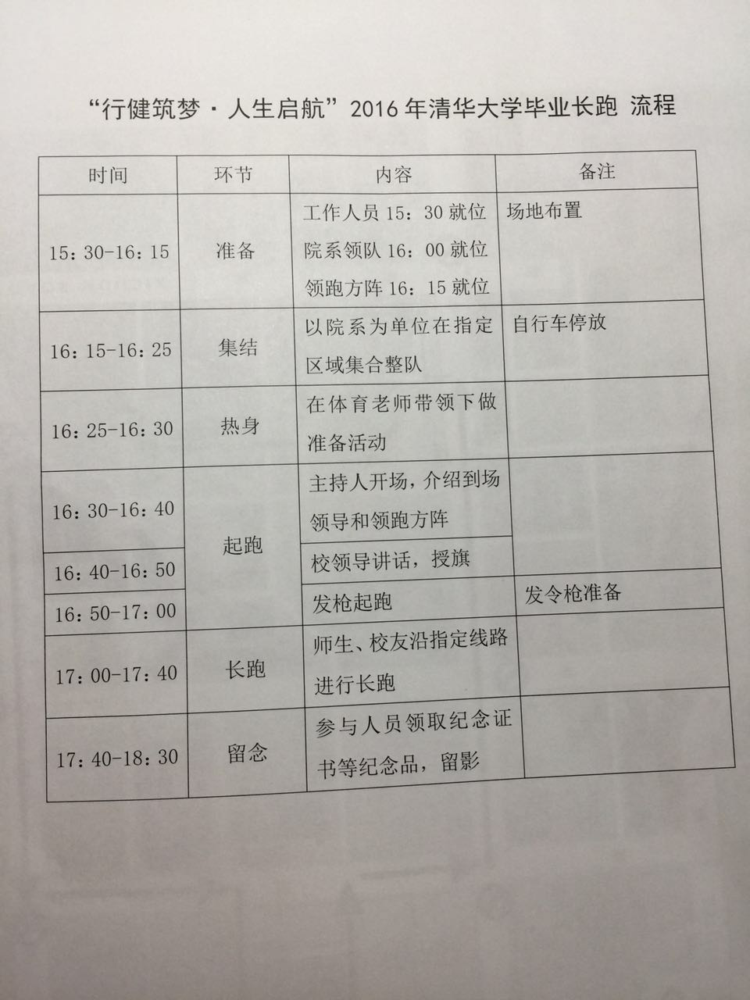
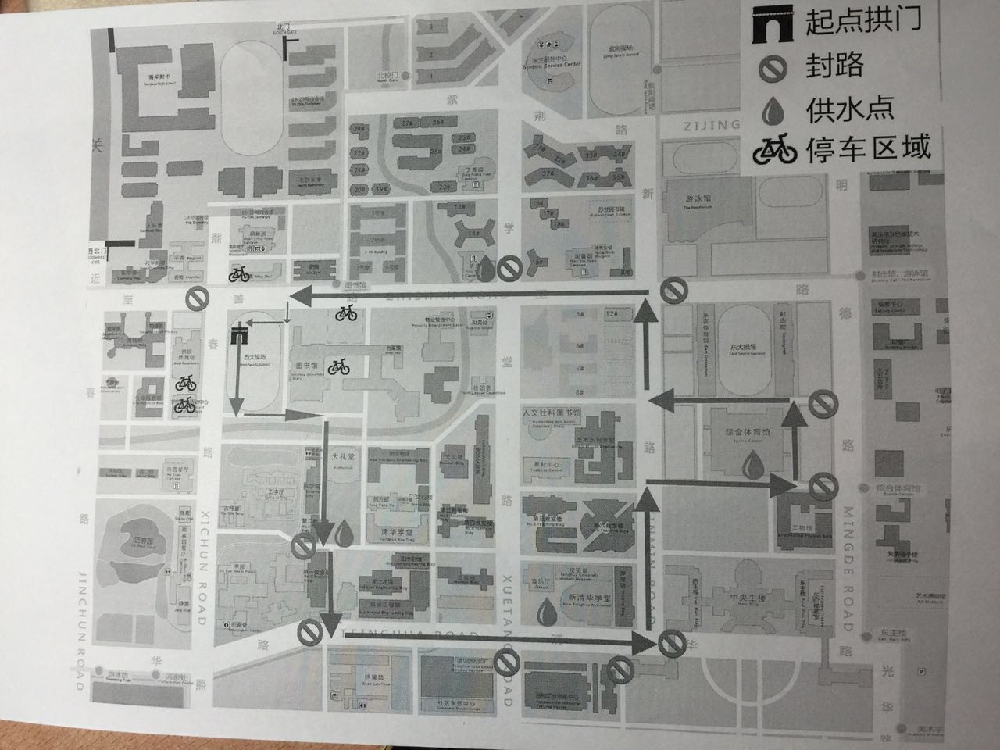

整理了一下毕业期间的活动和要办的手续，其中每一项均可点击查看详情。其中包括大部分同学和经双、管双同学的活动，可以在附件查看具体通知，但不包括其它双学位和优秀毕业生的安排。如果有遗漏和错误，请及时联系我修改。(此网页信息随时更新)
东主楼10区103
领取毕业证书及学位证书封皮，发学位服（结业的学生不能领取）：20元学位服清洗费（以班为单位统一领取下发）
伟伦110
领取亲友票、毕业戒指票、照相名条
西操


综合体育馆
19:00开始，提前半小时凭门票入场
开通“离校事务处理系统”（http://info.tsinghua.edu.cn）
楼长室
到楼长室交宿舍钥匙，领取密码条，在网上输入密码退宿，时间7.1-7.5
整队区位于主楼前台阶下及主楼大厅内
1、着装要求：整洁、整齐，不得穿半裤、吊带装、拖鞋等；男生服饰应有领有袖，女生应严肃大方。尤其注意，不得穿学位服参加此次合影。
2、携带物品要求：考虑现场安全因素，请参与合影的毕业生携带学生证（或IC卡），以便工作人员核查；请毕业生参加合影时尽量不要携带书包等物品，避免丢失。
3、现场秩序要求：现场只安排集体与校领导合影，请大家不要要求与校领导单独合影；如果有礼物赠予，可以通过校学生会转交。
4、照片返还：合影全部完成后，照片底片将于毕业典礼前发放给院系负责人；纸版合影由院系代为收取工本费（10寸照片，每张10元）后自行与拍照单位嘉艺文化传播有限公司联系对接（石加东，62794296，紫荆2号楼底层东侧）。
蒙民伟音乐厅
关于系毕业典礼的通知：计算机系毕业典礼定于7月1日（本周五）上午10点在蒙民伟音乐厅(新清华学堂旁边)举行，请各位同学于9:30入场完毕。必须着学位服入场，男生要穿白色、浅色衬衫，打领带，西裤和深色皮鞋；女生穿白色或浅色衬衫，打领带或领结，深色长裤或深素色裙子，深色皮鞋。毕业典礼历时约1小时，结束后全体本科生与系领导合影留念。本次毕业典礼邀请亲友参加，亲友与同学分开入场、就坐，9:45入场完毕，保留座位是一层后5排和二层所有座位，原则上每位同学亲友不超过2人。
二校门、清华学堂、大礼堂、水木清华
本班毕业合影定于7.1下午1点半到5点，地点为二校门、清华学堂、大礼堂、水木清华。三点半会有匡导霍导张导到场，班主任由于开会原因可能要晚到，匡导由于时间原因可能会早走，所以大家务必三点半在二校门到齐，穿正装。在此之前可以自由组合拍小合照，比如寝室、足球篮球队等等，着装形式均不限。 目前假定所有人均到场，故开销1500元每人分摊，收钱的事情交给袁泰陵来做了。如果大合照有不去的请回复本邮件说明情况。 大合照安排为：每个地点2张。一张正经的一张文艺或搞怪的。如果班主任和辅导员们不能同时到场的话我们就拍两张正经的。
东主楼10区109会议室
注意事项（见上方附件）部分摘录：
1. 报到证发放：
a. 学生需出示本人学生证/身份证、务必要在领取名单上签名；
b. 若代领，需签代领人姓名，代领人需出示委托书、委托人和被委托人的身份证复印件，院系需存档保管好，以备日后查询；
c. 操作栏为空者，说明尚未办理报到证或尚未办理就业手续。
2. 职业发展中心206办公大厅咨询电话62783128，上午8:30-12:00；下午1:30-16:30。咨询邮箱为jyzx@tsinghua.edu.cn。
3. 特殊情况可到职业发展中心206办公大厅办理：
6. 报到证非常重要切勿遗失。
伟伦楼东门口
10:45伟伦楼东门口集合 照毕业大合影，请注意区分经双、管双、本科的队伍
合影地点：伟伦楼东门外喷泉处
合影顺序：
10:50 本科毕业生合影
11:00 二学位毕业生合影
11:10 博士毕业生合影
11:20 硕士毕业生合影
11:30 MBA毕业生合影
11:40 EMBA毕业生合影
综合体育馆
最新通知：
7:45 到综体前广场系旗下集合
8:00 开始入场
不允许带包和相机，只带学位证封皮（紫色），不要带另一个毕业证封皮
有现场票的家长8:30之前北门入场,需要过安检
因特殊原因晚到的毕业生，请由二层西门进场，统一在二层西区就坐。
蒙民伟音乐厅和六教有直播，免票入场
通知摘录(部分)：
2.参加毕业典礼的毕业生和教师务必着装严肃，否则不予入场。毕业生必须穿戴学位服，并配合学位服，男生着白色或浅色衬衫，打领带，深色西裤，深色皮鞋；女生穿白色或浅色衬衫，可打领带或领结，深色长裤或深素色裙子，深色皮鞋。各院系带队教师和辅导员应着白色或浅色衬衫，深色长裤或裙子，深色皮鞋。
3.各院系师生在指定时间、按照指定的入场口和先后顺序入场，入场后严格按指定座位就坐。全体人员需在上午8：30前入场完毕，8：30各主要入场口关闭。因特殊原因晚到的毕业生，请由二层西门进场，统一在二层西区就坐。各院系入场时间、入场门、座位分布图及授学位安排下周一邮件通知。
8.毕业生应尽量少携带随身物品，特别是大书包及照相器材
9.学校为每名毕业生准备了毕业明信片一张，学生可以提前填写当天带到毕业典礼现场，从综体一层北门离场后投入网球场设置的信箱中，邮局将统一加盖“清华大学 2016.7.3”字样的邮戳
11.授学位照片拍摄由学校统一安排，现场由工作人员向毕业生发放“照片领取凭证”，照片领取时间为7月4日以后，地点在紫荆公寓2号楼0层嘉艺照相馆，费用已由学校统一支付完毕。建议院系组织毕业生统一领取
综合体育馆
交到各班负责人处，丢失项收费：学位服上面的绶带每件25元，学位帽子20元，帽子上面的流苏5元
经管学院两个大厅及小院
毕业戒指票，7月3日在12:30-2:20 在经管学院两个大厅及小院有毕业招待会， 大家可以来拍照等，同时凭票领毕业纪念品
综合体育馆
毕业典礼15：00开始，14:20 在综体一层南门口前集合入场，参加毕业典礼
照相名条，7月3日毕业典礼后 可以和钱院长一一照个人的合影，凭名条上台拍照，请务必妥善保管。
东门外 超越情
班级聚餐 李老师请大家，不带家长
东主楼10区108
清华大学离校系统通知(搬运于info)
1、打印离校手续单并找导师签字
2、填info->毕业->左侧“毕业调查问卷”
3、找鲍老师盖章 10区108本科生教学办公室
4、不推研同学清空宿舍
5、交给张导，张导会检查宿舍（很严格），张导7月5日出差，会有代理辅导员办理（可能会比较麻烦，尽量提前办好）
->get 学位证和毕业证 from 张导
舜德楼、伟伦楼
将于7月4日 办理第二学位离校手续， 请大家提前在网上 按附件要求填写好毕业信息， 4日到舜德楼大厅（校友办在舜德120）核查信息是否填写完整，领取毕业离校手续单。 之后到伟伦110 领取学位证，归还学位服，领毕业大合影（如果届时能有的话）等。
东主楼10区108
1、打印离校手续单并找导师签字
2、填info->毕业->左侧“毕业调查问卷”
3、找鲍老师盖章 10区108本科生教学办公室
4、不推研同学清空宿舍
5、交给张导，张导会检查宿舍（很严格），张导7月5日出差，会有代理辅导员办理（可能会比较麻烦，尽量提前办好）
->get 学位证和毕业证 from 张导
东主楼10区108
由各班统一将收齐的学位服交到系教学办公室。
楼长室
到楼长室交宿舍钥匙，领取密码条，在网上输入密码退宿，时间7.1-7.5
珍重！